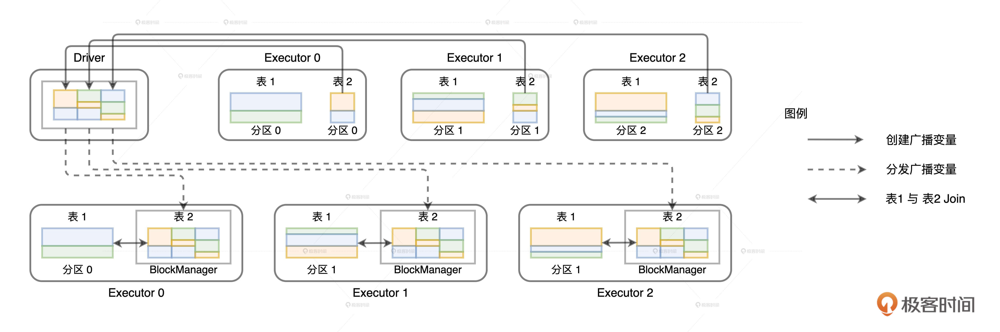
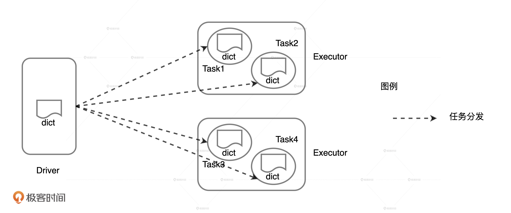
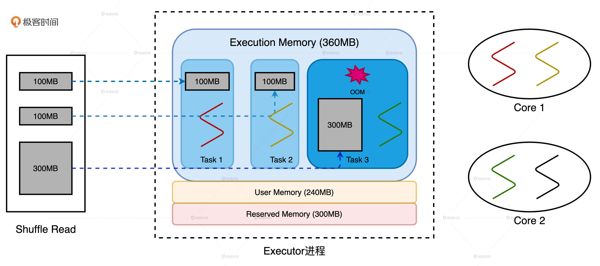
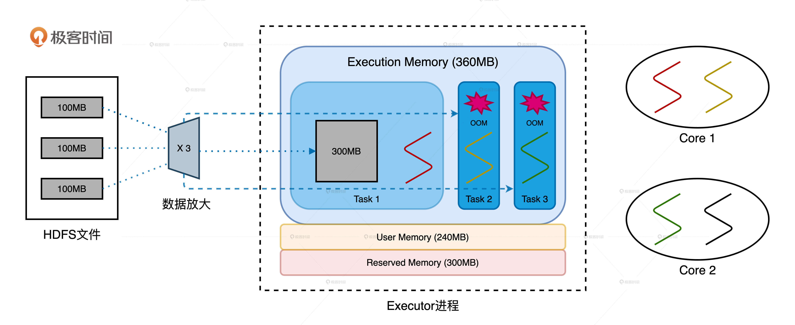

- 00 开篇词 Spark性能调优，你该掌握这些“套路”.md.html
- 01 性能调优的必要性：Spark本身就很快，为啥还需要我调优？.md.html
- 02 性能调优的本质：调优的手段五花八门，该从哪里入手？.md.html
- 03 RDD：为什么你必须要理解弹性分布式数据集？.md.html
- 04 DAG与流水线：到底啥叫“内存计算”？.md.html
- 05 调度系统：“数据不动代码动”到底是什么意思？.md.html
- 06 存储系统：空间换时间，还是时间换空间？.md.html
- 07 内存管理基础：Spark如何高效利用有限的内存空间？.md.html
- 08 应用开发三原则：如何拓展自己的开发边界？.md.html
- 09 调优一筹莫展，配置项速查手册让你事半功倍！（上）.md.html
- 10 调优一筹莫展，配置项速查手册让你事半功倍！（下）.md.html
- 11 为什么说Shuffle是一时无两的性能杀手？.md.html
- 12 广播变量（一）：克制Shuffle，如何一招制胜！.md.html
- 13 广播变量（二）：如何让Spark SQL选择Broadcast Joins？.md.html
- 14 CPU视角：如何高效地利用CPU？.md.html
- 15 内存视角（一）：如何最大化内存的使用效率？.md.html
- 16 内存视角（二）：如何有效避免Cache滥用？.md.html
- 17 内存视角（三）：OOM都是谁的锅？怎么破？.md.html
- 18 磁盘视角：如果内存无限大，磁盘还有用武之地吗？.md.html
- 19 网络视角：如何有效降低网络开销？.md.html
- 20 RDD和DataFrame：既生瑜，何生亮？.md.html
- 21 Catalyst逻辑计划：你的SQL语句是怎么被优化的？（上）.md.html
- 22 Catalyst物理计划：你的SQL语句是怎么被优化的（下）？.md.html
- 23 钨丝计划：Tungsten给开发者带来了哪些福报？.md.html
- 24 Spark 3.0（一）：AQE的3个特性怎么才能用好？.md.html
- 25 Spark 3.0（二）：DPP特性该怎么用？.md.html
- 26 Join Hints指南：不同场景下，如何选择Join策略？.md.html
- 27 大表Join小表：广播变量容不下小表怎么办？.md.html
- 28 大表Join大表（一）：什么是“分而治之”的调优思路？.md.html
- 29 大表Join大表（二）：什么是负隅顽抗的调优思路？.md.html
- 30 应用开发：北京市小客车（汽油车）摇号趋势分析.md.html
- 31 性能调优：手把手带你提升应用的执行性能.md.html
- Spark UI（上）深入解读Spark作业的“体检报告”.md.html
- Spark UI（下）：深入解读Spark作业的“体检报告”.md.html
- 期末考试 “Spark性能调优”100分试卷等你来挑战！.md.html
- 结束语 在时间面前，做一个笃定学习的人.md.html
- 捐赠
17 内存视角（三）：OOM都是谁的锅？怎么破？
你好，我是吴磊。
无论是批处理、流计算，还是数据分析、机器学习，只要是在Spark作业中，我们总能见到OOM（Out Of Memory，内存溢出）的身影。一旦出现OOM，作业就会中断，应用的业务功能也都无法执行。因此，及时处理OOM问题是我们日常开发中一项非常重要的工作。
但是，Spark报出的OOM问题可以说是五花八门，常常让人找不到头绪。比如，我们经常遇到，数据集按照尺寸估算本该可以完全放进内存，但Spark依然会报OOM异常。这个时候，不少同学都会参考网上的做法，把spark.executor.memory不断地调大、调大、再调大，直到内心崩溃也无济于事，最后只能放弃。
那么，当我们拿到OOM这个“烫手的山芋”的时候该怎么办呢？我们最先应该弄清楚的是“到底哪里出现了OOM”。只有准确定位出现问题的具体区域，我们的调优才能有的放矢。具体来说，这个“哪里”，我们至少要分3个方面去看。
- 发生OOM的LOC（Line Of Code），也就是代码位置在哪？
- OOM发生在Driver端，还是在Executor端？
- 如果是发生在Executor端，OOM到底发生在哪一片内存区域？
定位出错代码的位置非常重要但也非常简单，我们只要利用Stack Trace就能很快找到抛出问题的LOC。因此，更关键的是，我们要明确出问题的到底是Driver端还是Executor端，以及是哪片内存区域。Driver和Executor产生OOM的病灶不同，我们自然需要区别对待。
所以今天这一讲，我们就先来说说Driver端的OOM问题和应对方法。由于内存在Executor端被划分成了不同区域，因此，对于Executor端怪相百出的OOM，我们还要结合案例来分类讨论。最后，我会带你整理出一套应对OOM的“武功秘籍”，让你在面对OOM的时候，能够见招拆招、有的放矢！
Driver端的OOM
我们先来说说Driver端的OOM。Driver的主要职责是任务调度，同时参与非常少量的任务计算，因此Driver的内存配置一般都偏低，也没有更加细分的内存区域。
因为Driver的内存就是囫囵的那么一块，所以Driver端的OOM问题自然不是调度系统的毛病，只可能来自它涉及的计算任务，主要有两类：
- 创建小规模的分布式数据集：使用parallelize、createDataFrame等API创建数据集
- 收集计算结果：通过take、show、collect等算子把结果收集到Driver端
因此Driver端的OOM逃不出2类病灶：
- 创建的数据集超过内存上限
- 收集的结果集超过内存上限
第一类病灶不言自明，咱们不细说了。看到第二类病灶，想必你第一时间想到的就是万恶的collect。确实，说到OOM就不得不提collect。collect算子会从Executors把全量数据拉回到Driver端，因此，如果结果集尺寸超过Driver内存上限，它自然会报OOM。
由开发者直接调用collect算子而触发的OOM问题其实很好定位，比较难定位的是间接调用collect而导致的OOM。那么，间接调用collect是指什么呢？还记得广播变量的工作原理吗？

广播变量在创建的过程中，需要先把分布在所有Executors的数据分片拉取到Driver端，然后在Driver端构建广播变量，最后Driver端把封装好的广播变量再分发给各个Executors。第一步的数据拉取其实就是用collect实现的。如果Executors中数据分片的总大小超过Driver端内存上限也会报OOM。在日常的调优工作中，你看到的表象和症状可能是：
java.lang.OutOfMemoryError: Not enough memory to build and broadcast
但实际的病理却是Driver端内存受限，没有办法容纳拉取回的结果集。找到了病因，再去应对Driver端的OOM就很简单了。我们只要对结果集尺寸做适当的预估，然后再相应地增加Driver侧的内存配置就好了。调节Driver端侧内存大小我们要用到spark.driver.memory配置项，预估数据集尺寸可以用“先Cache，再查看执行计划”的方式，示例代码如下。
val df: DataFrame = _
df.cache.count
val plan = df.queryExecution.logical
val estimated: BigInt = spark
.sessionState
.executePlan(plan)
.optimizedPlan
.stats
.sizeInBytes
Executor端的OOM
我们再来说说Executor端的OOM。我们知道，执行内存分为4个区域：Reserved Memory、User Memory、Storage Memory和Execution Memory。这4个区域中都有哪些区域会报OOM异常呢？哪些区域压根就不存在OOM的可能呢？
在Executors中，与任务执行有关的内存区域才存在OOM的隐患。其中，Reserved Memory大小固定为300MB，因为它是硬编码到源码中的，所以不受用户控制。而对于Storage Memory来说，即便数据集不能完全缓存到MemoryStore，Spark也不会抛OOM异常，额外的数据要么落盘（MEMORY_AND_DISK）、要么直接放弃（MEMORY_ONLY）。
因此，当Executors出现OOM的问题，我们可以先把Reserved Memory和Storage Memory排除，然后锁定Execution Memory和User Memory去找毛病。
User Memory的OOM
在内存管理那一讲，我们说过User Memory用于存储用户自定义的数据结构，如数组、列表、字典等。因此，如果这些数据结构的总大小超出了User Memory内存区域的上限，你可能就会看到下表示例中的报错。
java.lang.OutOfMemoryError: Java heap space at java.util.Arrays.copyOf
java.lang.OutOfMemoryError: Java heap space at java.lang.reflect.Array.newInstance
如果你的数据结构是用于分布式数据转换，在计算User Memory内存消耗时，你就需要考虑Executor的线程池大小。还记得下面的这个例子吗？
val dict = List(“spark”, “tune”)
val words = spark.sparkContext.textFile(“~/words.csv”)
val keywords = words.filter(word => dict.contains(word))
keywords.map((_, 1)).reduceByKey(_ + _).collect
自定义的列表dict会随着Task分发到所有Executors，因此多个Task中的dict会对User Memory产生重复消耗。如果把dict尺寸记为#size，Executor线程池大小记为#threads，那么dict对User Memory的总消耗就是：#size * #threads。一旦总消耗超出User Memory内存上限，自然就会产生OOM问题。

那么，解决User Memory 端 OOM的思路和Driver端的并无二致，也是先对数据结构的消耗进行预估，然后相应地扩大User Memory的内存配置。不过，相比Driver，User Memory内存上限的影响因素更多，总大小由spark.executor.memory * （ 1 - spark.memory.fraction）计算得到。
Execution Memory的OOM
要说OOM的高发区，非Execution Memory莫属。久行夜路必撞鬼，在分布式任务执行的过程中，Execution Memory首当其冲，因此出错的概率相比其他内存区域更高。关于Execution Memory的OOM，我发现不少同学都存在这么一个误区：只要数据量比执行内存小就不会发生OOM，相反就会有一定的几率触发OOM问题。
实际上，数据量并不是决定OOM与否的关键因素，数据分布与Execution Memory的运行时规划是否匹配才是。这么说可能比较抽象，你还记得黄小乙的如意算盘吗？为了提高老乡们种地的热情和积极性，他制定了个转让协议，所有老乡申请的土地面积介于1/N/2和1/N之间。因此，如果有的老乡贪多求快，买的种子远远超过1/N上限能够容纳的数量，这位老乡多买的那部分种子都会被白白浪费掉。
同样的，我们可以把Execution Memory看作是
土地，把分布式数据集看作是种子，一旦分布式任务的内存请求超出1/N这个上限，Execution Memory就会出现OOM问题。而且，相比其他场景下的OOM问题，Execution Memory的OOM要复杂得多，它不仅仅与内存空间大小、数据分布有关，还与Executor线程池和运行时任务调度有关。
抓住了引起OOM问题最核心的原因，对于Execution Memory OOM的诸多表象，我们就能从容应对了。下面，我们就来看两个平时开发中常见的实例：数据倾斜和数据膨胀。为了方便说明，在这两个实例中，计算节点的硬件配置是一样的，都是2个CPU core，每个core有两个线程，内存大小为1GB，并且spark.executor.cores设置为3，spark.executor.memory设置为900MB。
根据配置项那一讲我们说过的不同内存区域的计算公式，在默认配置下，我们不难算出Execution Memory和Storage Memory内存空间都是180MB。而且，因为我们的例子里没有RDD缓存，所以Execution Memory内存空间上限是360MB。
实例1：数据倾斜
我们先来看第一个数据倾斜的例子。节点在Reduce阶段拉取数据分片，3个Reduce Task对应的数据分片大小分别是100MB和300MB。显然，第三个数据分片存在轻微的数据倾斜。由于Executor线程池大小为3，因此每个Reduce Task最多可获得360MB * 1 / 3 = 120MB的内存空间。Task1、Task2获取到的内存空间足以容纳分片1、分片2，因此可以顺利完成任务。

Task3的数据分片大小远超内存上限，即便Spark在Reduce阶段支持Spill和外排，120MB的内存空间也无法满足300MB数据最基本的计算需要，如PairBuffer和AppendOnlyMap等数据结构的内存消耗，以及数据排序的临时内存消耗等等。
这个例子的表象是数据倾斜导致OOM，但实质上是Task3的内存请求超出1/N上限。因此，针对以这个案例为代表的数据倾斜问题，我们至少有2种调优思路：
- 消除数据倾斜，让所有的数据分片尺寸都不大于100MB
- 调整Executor线程池、内存、并行度等相关配置，提高1/N上限到300MB
每一种思路都可以衍生出许多不同的方法，就拿第2种思路来说，要满足1/N的上限，最简单地，我们可以把spark.executor.cores设置成1，也就是Executor线程池只有一个线程“并行”工作。这个时候，每个任务的内存上限都变成了360MB，容纳300MB的数据分片绰绰有余。
当然，线程池大小设置为1是不可取的，刚刚只是为了说明调优的灵活性。延续第二个思路，你需要去平衡多个方面的配置项，在充分利用CPU的前提下解决OOM的问题。比如：
- 维持并发度、并行度不变，增大执行内存设置，提高1/N上限到300MB
- 维持并发度、执行内存不变，使用相关配置项来提升并行度将数据打散，让所有的数据分片尺寸都缩小到100MB以内
关于线程池、内存和并行度之间的平衡与设置，我在CPU视角那一讲做过详细的介绍，你可以去回顾一下。至于怎么消除数据倾斜，你可以好好想想，再把你的思路分享出来。
实例2：数据膨胀
我们再来看第二个数据膨胀的例子。节点在Map阶段拉取HDFS数据分片，3个Map Task对应的数据分片大小都是100MB。按照之前的计算，每个Map Task最多可获得120MB的执行内存，不应该出现OOM问题才对。

尴尬的地方在于，磁盘中的数据进了JVM之后会膨胀。在我们的例子中，数据分片加载到JVM Heap之后翻了3倍，原本100MB的数据变成了300MB，因此，OOM就成了一件必然会发生的事情。
在这个案例中，表象是数据膨胀导致OOM，但本质上还是Task2和Task3的内存请求超出1/N上限。因此，针对以这个案例为代表的数据膨胀问题，我们还是有至少2种调优思路：
- 把数据打散，提高数据分片数量、降低数据粒度，让膨胀之后的数据量降到100MB左右
- 加大内存配置，结合Executor线程池调整，提高1/N上限到300MB
小结
想要高效解决五花八门的OOM问题，最重要的就是准确定位问题出现的区域，这样我们的调优才能有的放矢，我建议你按照两步进行。
首先，定位OOM发生的代码位置，你通过Stack Trace就能很快得到答案。
其次，定位OOM是发生在Driver端还是在Executor端。如果是发生在Executor端，再定位具体发生的区域。
发生在Driver端的OOM可以归结为两类：
- 创建的数据集超过内存上限
- 收集的结果集超过内存上限
应对Driver端OOM的常规方法，是先适当预估结果集尺寸，然后再相应增加Driver侧的内存配置。
发生在Executors侧的OOM只和User Memory和Execution Memory区域有关，因为它们都和任务执行有关。其中，User Memory区域OOM的产生的原因和解决办法与Driver别无二致，你可以直接参考。
而Execution Memory区域OOM的产生的原因是数据分布与Execution Memory的运行时规划不匹配，也就是分布式任务的内存请求超出了1/N上限。解决Execution Memory区域OOM问题的思路总的来说可以分为3类：
- 消除数据倾斜，让所有的数据分片尺寸都小于1/N上限
- 把数据打散，提高数据分片数量、降低数据粒度，让膨胀之后的数据量降到1/N以下
- 加大内存配置，结合Executor线程池调整，提高1/N上限
每日一练
- 数据膨胀导致OOM的例子中，为什么Task1能获取到300MB的内存空间？（提示：可以回顾CPU视角那一讲去寻找答案。）
- 在日常开发中，你还遇到过哪些OOM表象？你能把它们归纳到我们今天讲的分类中吗？
期待在留言区看到你的思考和分享，我们下一讲见！
© 2019 - 2023 Liangliang Lee. Powered by gin and hexo-theme-book.